第四章 收敛比
1. 什么是流量收敛¶
数据报文的流量收敛，是指数据报文在网络转发过程中由于架构、设备等非故障原因而不能实现线速无丢包转发。在流量收敛时，网络设备会有部分端口拥塞，进而丢弃部分报文。为了能够描述不同的收敛程度，我们通常用一个系统所有南向（下行）接口的总带宽比上这个系统所有北向（上行）接口总带宽的数值来表示，我们也将这个数值称为这个系统的收敛比。
举个例子，假设你有10台服务器，每台服务器通过10GE的接口连接到一个接入交换机，那我们一共就有100G（10×10G=100G）的南向带宽。假设这台交换机还有2个40GE的接口可以用于接入到更高一层的汇聚交换机，那我们一共就有80G（2×40G=80G）的北向带宽。此时，我们得到的收敛比则是1.25：1（100G÷80G=1.25）。
需要说明的是，造成网络流量收敛的原因并不总是上述描述的这个例子，不过总的来说，我们可以将流量收敛的原因分为两类：
- 交换机不支持线速转发，在交换机内部可能形成流量收敛；
- 网络架构设计的原因，无论交换机是否线速，转发报文时也会存在流量收敛。
以下将分别以示例说明。

文中对于传输报文速率、带宽收敛等的计算没有考虑到网络层协议等开销。
1.1. 交换机非线速导致的收敛¶
某交换机只具有8Gbps线速转发的交换能力，某时刻从交换机前12个接口向后12个接口同时转发流量，当每个接口流量均达到1Gbps时，在交换机内部一定会有拥塞，此时便形成了转发的收敛（如[图4-1]所示）。实际每秒交换机接收流量为12Gbps，但转发出去的报文只有8Gbps，收敛比为输入带宽(12Gbps)÷输出带宽(8Gbps)=1.5：1。
图4-1 交换机非线速导致的收敛示意
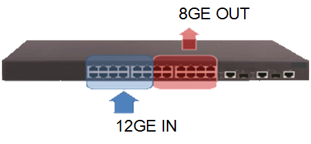
{kind=link}
1.2. 网络设计导致的收敛¶
如[图4-2]所示，4台服务器分别通过10GE链路连接接入交换机，接入交换机通过1条25GE链路连接核心交换机。即接入交换机的下行带宽为40Gbps，接入交换机的上行带宽为25Gbps。下上行链路收敛比为下行带宽（40Gbps）÷上行带宽（25Gbps）=1.6：1。
图4-2 网络设计导致的收敛示意
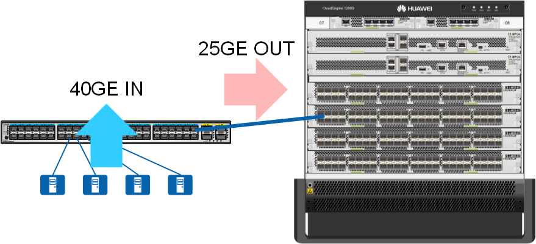
{kind=link}
当然，最理想的收敛比是1：1。但是我们也会注意到，低收敛比的设计意味着选用更高上行端口带宽的设备，这意味着更多的投入；如果在不计成本的情况下，1：1的收敛比是我们都期望能实现的。另外一方面，我们的服务器也不是每时每刻都工作在高负荷下，占用100%的带宽。这意味着即使不是1：1的收敛比，也不是就一定会出现数据报文因拥塞丢包，业务仍可以正常运行。因此，找到这两者之间的平衡，找到最适合的收敛比，就显得十分有必要。
收敛比反映了一个网络线速转发流量的能力，因此通常我们会把收敛比作为衡量一个高性能网络的因素来考虑。一般在园区网，由于流量压力不大，园区网网络一般都会存在较大的流量收敛；但在数据中心网络，由于其对性能要求高，流量收敛的设计就十分重要。
2. 网络流量收敛设计¶
在进行网络流量收敛设计之前，我们需要了解网络中需要部署的业务应用及其特性，明确网络业务和流量模型。综合考虑东西、南北流量的大小、比例，来制定合适的收敛比和选择相应的设备。一般需要从以下几个方面考虑：
- 网络架构
- 可用链路设计
- 设备选型
在实际应用中，除非是对流量收敛比要求特别高的网络，我们也有一种简化的方法来考虑，即主要考虑设备的可用上行口的带宽来设计。
2.1. 网络架构¶
目前常见的网络结构一般采用“两层”结构。这里的“二层”是指Spine+Leaf两层设备的扁平化设计（如[图4-3]所示），二层架构比多层架构整体上具有更小的收敛比，在性能要求更高的数据中心等环境应考虑为二层扁平化架构设计。
图4-3 数据中心二层网络架构示意
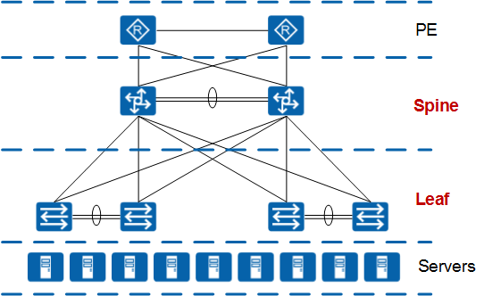
{kind=link}
现在，还有很多数据中心网络采用Border Leaf、Spine、Leaf的组网设计（如[图4-4]所示）。这种设计实际上也是二层的结构，因为Border Leaf和Leaf都是属于同一层的。在政府或金融或某些特殊领域等，由于业务架构或网络安全性的要求，需要Spine层设备和网关分离，部署安全隔离等，则会采用这种结构。
图4-4 数据中心Border Leaf+Spine+Leaf网络架构示意
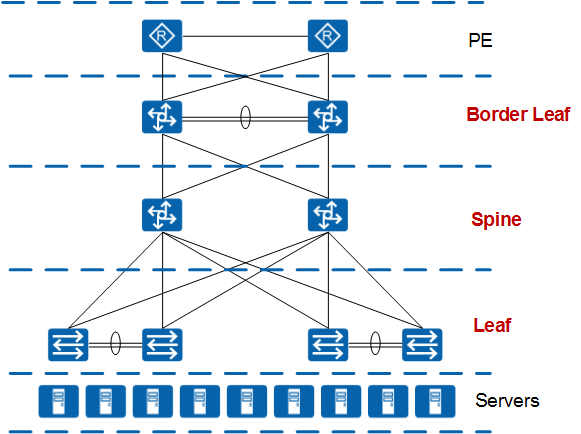
{kind=link}
在实际设计中应该根据需要灵活选择，例如性能要求高的应用系统网络架构采用二层网络设计，而安全性要求高的应用系统网络架构采用三层或多层网络设计。
2.2. 可用链路设计¶
在传统数据中心网络中，通常以生成树协议（STP）配合网关冗余协议（VRRP）提供服务器接入的可靠性。同时，服务器以多网卡连接网络以进一步提供冗余能力。但此种设计的冗余链路往往只能在主用链路故障时才发挥作用，链路及设备的利用率不高，也影响着网络的收敛比。
华为推荐采用跨设备链路聚合（M-LAG）技术构建数据中心网络。如[图4-5]所示，M-LAG可以看做一种横向虚拟化技术，将双归接入的两台设备在逻辑上虚拟成一台设备。M-LAG提供了一个没有环路的二层拓扑，同时M-LAG成员口所在链路均参与转发，不存在链路的浪费情况。
图4-5 M-LAG示意图
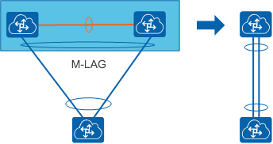
{kind=link}
需要注意的是，当采用M-LAG方式接入的时候，需要规划好端口的使用，因为M-LAG的peer-link链路和双主检测链路都需要预留端口，如[图4-6]所示。
图4-6 M-LAG端口使用示意图
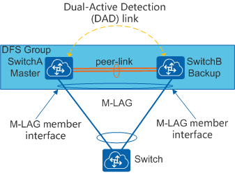
{kind=link}
关于M-LAG链路接口的说明可参见[表4-1]。
表4-1 M-LAG链路接口说明
| 链路接口 | 说明 |
|---|---|
| peer-link链路 | peer-link链路是一条直连链路且必须做链路聚合，用于交换协商报文及传输部分流量。接口配置为peer-link接口后，该接口上不能再配置其它业务。 为了增加peer-link链路的可靠性，推荐采用多条链路做链路聚合。 |
| 双主检测链路 | 双主检测链路是一条三层互通链路，用于M-LAG主备设备间发送双主检测报文。 |
| M-LAG成员接口 | M-LAG主备设备上连接用户侧主机（或交换设备）的Eth-Trunk接口。 为了增加可靠性，推荐链路聚合配置为LACP模式。 |
在服务器接入侧，也有类似的设计方式。若服务器双网卡为主备方式，则可设计为只有主用链路生效、备用链路在主用链路故障时启用；若服务器双网卡为负载分担方式，则全部上联链路均可以使用，配合链路收敛比设计可以提高网络中的实际可用带宽，提升网络转发性能。
2.3. 设备选型¶
上述举例均假设所有交换机的所有端口可以线速转发，如果交换机不能线速转发，还需要考虑在交换机上的收敛。因此，为保证数据中心网络的高性能，最好选用具有全线速能力的交换机设备。
华为CloudEngine系列交换机，全系列均支持线速转发。如[表4-2]所示，下面我们以 CE6870-48T6CQ-EI 为例，给大家介绍一下如何初步判断一台交换机是否支持线速转发。
表4-2 CE6870-48T6CQ-EI性能参数
| 项目 | CE6870-48T6CQ-EI |
|---|---|
| 10GE BASE-T接口 | 48 |
| 10GE SFP+接口 | NA |
| 100GE QSFP28接口 | 6 |
| 交换容量 | 2.16Tbps/19.44Tbps |
如[表4-2]所示，查询CE6870-48T6CQ-EI的性能参数，我们可以看到CE6870-48T6CQ-EI共有48个10GE接口和6个100GE接口。我们首先计算CE6870-48T6CQ-EI上所有端口能提供的总带宽。计算公式为：端口数×相应端口速率×2（全双工模式）。如果得到的总带宽≤交换容量，则我们可认为该交换机在交换容量上可做到线速转发。下面我们来计算验证一下。
计算可得：(48×10G+6×100G)×2=2160G≤2.16T。因此CE6870-48T6CQ-EI是线速转发的。至于CE6870-48T6CQ-EI还有一个交换容量19.44Tbps，这个是指堆叠情况下的交换容量。CE6870-48T6CQ-EI最多支持9台设备进行堆叠，因此2.16T×9=19.44T≤19.44T，所以CE6870-48T6CQ-EI在堆叠情况下，也可以做到线速转发。
此处以盒式交换机进行了说明，实际上框式交换机的情况要复杂的多。框式交换机的业务板卡需要正确配合交换网板的选用才能做到设备的线速转发，可通过转发性能评估工具来搭配选择，确保选择的业务板卡和交换网板组合可以线速转发。
下面为了便于说明，我们假设数据中心网络整体采用Border Leaf-Spine-Leaf的三层结构，为大家介绍网络收敛比的设计。
2.4. 服务器接入Leaf¶
服务器的接入涉及到布线方式，以及接入交换机的选择。常见的布线方式有TOR以及EOR/MOR两类，参见[图4-7]和[图4-8]。这两类方式可以组合出丰富的部署方式，在具体项目中，我们需要根据业务部署的要求，灵活选择不同的部署方式或组合。
图4-7 TOR接入方式
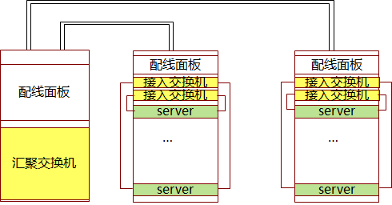
{kind=link}
图4-8 EOR/MOR接入方式
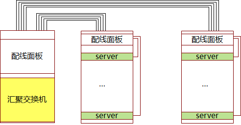
{kind=link}
两者的对比如下，参见[表4-3]。
表4-3 服务器接入方式对比
| 部署方式 | TOR（Top Of Rack） | EOR（End Of Rack）/MOR（Middle Of Rack） |
|---|---|---|
| 服务器类型 | 1U/2U/4U机架服务器、刀片服务器(直通) | 1U/2U/4U机架服务器、刀片服务器(交换模块) |
| 适用场景 | 高密度服务器机柜 | 低密度服务器机柜，高密刀片机柜 |
| 布线 | 简化服务器机柜与网络机柜间水平布线 | 布线复杂 |
| 维护 | 接入设备多，网络管理维护复杂； 电缆维护简单，扩展性好。 |
接入设备少，维护简单； 电缆维护复杂。 |
在数据中心网络的场景中，大部分属于高密度服务器的场景，因此采用TOR的方式比较常见。不同服务器和场景的部署思路可参考表4-4。
表4-4 服务器部署典型场景
| 服务器密度 | 服务器种类 | I/O模块配置 | 业务网口 | 存储网口 | 业务管理网口 | 建议的接入交换机部署 |
|---|---|---|---|---|---|---|
| 低密度分区 | 机架式服务器 2U为例 |
固定GE/10GE，并配置FC及GE/10GE网卡 | 2个 GE/10GE |
0~2个 FC或GE/10GE |
0~2个 GE/10GE |
EOR/MOR/TOR |
| 高密度分区 | 机架式服务器 2U为例 |
固定GE/10GE，并配置FC及GE/10GE网卡 | 2个 GE/10GE |
0~2个 FC或GE/10GE |
0~2个 GE/10GE |
TOR |
| 刀片服务器 以10刀片/框为例 8U |
配置直通模块 (每个网口与刀片通过背板直接连接) |
20个 GE直通 |
0,10,20个 FC直通或0,10,20 GE直通 |
0,20个 GE |
TOR 以太链路需小于TOR最大接入密度 |
|
| 配置交换模块 (交换模块相当于一个接入交换机) |
2~4个 10GE |
0~6个 FC或10GE |
0~2个 GE/10GE |
EOR/MOR |
下面我们以高密机架服务器场景为例，介绍下具体的接入方案。如[图4-9]所示，每机架部署了10台机架式服务器（通常会部署812台服务器），每排共有10个机架（通常每排会部署812个机架）部署了服务器，构成高密度机架服务器部署。某数据中心共有4排这样的机架。
图4-9 高密机架服务器接入方案
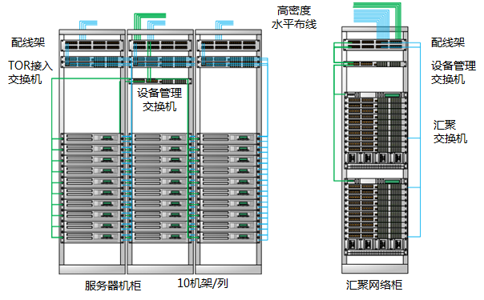
{kind=link}
每台服务器具有2个10GE业务网口和1个FE接入BMC管理口。为了保证可靠性，每台服务器采用M-LAG的方式接入网络。相邻的两个机架组成一组M-LAG的系统，这样一个机架上面的TOR交换机需要接入200G（10G×10×2=200G）带宽的流量。
根据经验值，我们在接入层的收敛比一般控制在3：1左右，这主要取决于我们将为接入交换机设计多大的上行带宽。目前来说，接入交换机的单个上行接口可以达到40G的带宽，理论上通过4个40G的上行接口，我们就可以大致将收敛比做到1：1。但是此时我们至少需要为该Spine设置4台汇聚交换机，且每增加一个上行接口就需要增加一台汇聚交换机，因此这个开销还是十分可观的。在实际部署中，我们一般设置两台汇聚交换机，接入交换机通过2个40GE接口接入汇聚交换机，提供80G（40G×2=80G）的上行带宽。这样我们就可以得到2.5：1（200G÷80G=2.5）的收敛比，很好的将其控制在3:1以内。
根据以上的分析，我们推荐选择 CE6870-24S6CQ-EI 作为TOR接入交换机，如图4-10所示，该交换机具有24个10GE SFP+以太网光接口和6个40GE/100GE QSFP28以太网光接口。其上行口还支持100GE的光模块，在不增加汇聚交换机的情况下，通过100GE接口也可以达到接近1：1的收敛比。除此之外，CE6870系列交换机提供4GB的大缓存，可轻松应对视频、搜索等应用引起的流量浪涌。
图4-10 CE6870-24S6CQ-EI
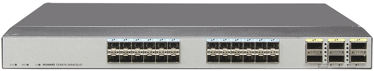
{kind=link}
CE6870系列还提供48个10GE接口的款型，可支持更高密度的服务器接入需求。如果不需要用到大缓存，也可以选用 CE6851-48S6Q-HI 作为TOR接入交换机。
此处没有考虑服务器和交换机管理网口的接入需求。由于管理网口不需要大的带宽保证，从控制成本的角度出发，一般情况下会选择价格较便宜的接入交换机（只要满足接口接入需求即可），例如华为S5700系列交换机，采用MOR/EOR的部署方式。
2.5. Leaf接入Spine¶
下面我们接着看Spine层交换机的选择。每排机架上共有10台TOR交换机需要连接到我们的汇聚交换机，每台TOR交换机通过2个40GE接口接入到Spine层设备，一共是80个（2×10×4=80）接口，3200G（80×40G=3200G）的带宽。
此时我们可以选择将这些接口分为几个Spine节点接入到Spine层设备。为了避免的设备的单点故障引起网络问题，我们每个Spine节点都至少有2台Spine层交换机。
如果我们选择将这些TOR交换机作为一个Spine接入，那么这个Spine接入的接口数为80个接口，3200G的带宽，如[图4-11]所示。在这种情况下，我们如果通过100G的上行链路链接到Border Leaf设备（一般为两台，北向连接到出口路由），则可以提供400G（4×100G=400G）的带宽，此时收敛比为8:1（3200G÷400G=8）。
图4-11 1个Spine接入
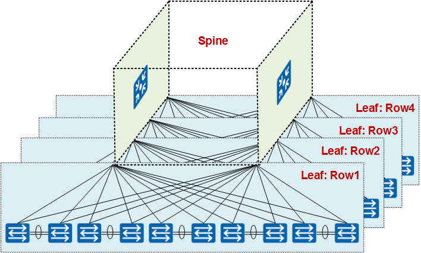
{kind=link}
如果我们选择将这些TOR交换机分为两个Spine接入，那么每个Spine接入的接口数为40个接口，1600G的带宽，如[图4-12]所示。在这种情况下，我们如果通过100G的上行链路链接到Border Leaf设备，则可以提供400G（4×100G=400G）的带宽，此时收敛比为4:1（1600G÷400G=4）。
图4-12 2个Spine接入
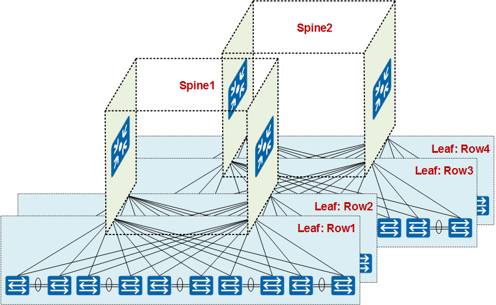
{kind=link}
值得注意的是，在数据中心网络中Spine的划分，收敛比并不是唯一的依据，更主要的是根据业务和功能的分区来划分的。另外受限于交换机本身路由、ARP等规格的限制，再加上现在虚拟机的大规模应用（虚拟比达到1:30或更高，对规格要求更高），一个Spine的规模也不会太大。
在这个场景下，我们采用了两个Spine接入的方式，即将Row1和Row2共用一个Spine，Row3和Row4共用一个Spine。此时我们一般选用框式交换机或高性能的盒式灵活插卡交换机来作为Spine设备。
如[图4-13]所示，我们推荐选择 CE12804 作为Spine交换机。CE12804具有4个业务板卡槽位（CE12800系列交换机可以提供4、8、12、16个业务板卡槽位，可根据需要灵活选择），可选的板卡种类丰富，支持高密40GE板卡（最高可提供144个40GE接口，36×4=144）和高密100GE板卡（最高可提供144个100GE接口，36×4=144）。可根据实际需求灵活选择和搭配，也便于后期的调整或者扩容。
图4-13 CE12804
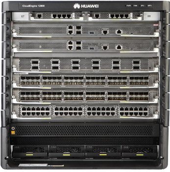
{kind=link}
在上述的需求下，我们可以为每台CE12804交换机选择2块24接口的40GE单板（CE-L24LQ-EC1）用于下行连接和1块4接口的100GE单板（CE-L04CF-EF）用于上行连接。
实际上，还有一种更低成本的方案，即选用 CE8860-4C-EI 作为Spine交换机，如[图4-14]所示。CE8860-4C-EI是具有2U高度的灵活插卡交换机，最多可以插入4个插卡。在以上需求下，我们可以选择3块16端口的40GE插卡（CE88-D16Q）和1块8端口的40GE/100GE插卡（CE88-D8CQ）。 CE88-D16Q 用于下行连接； CE88-D8CQ 用于上行连接。
图4-14 CE8860-4C-EI
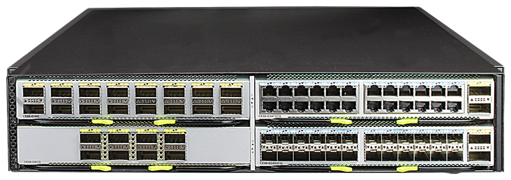
{kind=link}
2.6. Spine接入Border Leaf¶
最后我们来看Border Leaf层的设计，如[图4-15]所示。Border Leaf北向主要是连接出口路由器，南向连接不同的Spine，承担南北向流量的转发。Border Leaf的设计很重要的一个是考虑客户所购买的出口路由器的端口。这些端口相比较于我们下层的网络设备比较贵，一般情况下都是10GE/40GE的接口。这也意味着我们在Border Leaf的收敛比会比较大。
图4-15 Spine接入Border Leaf示意
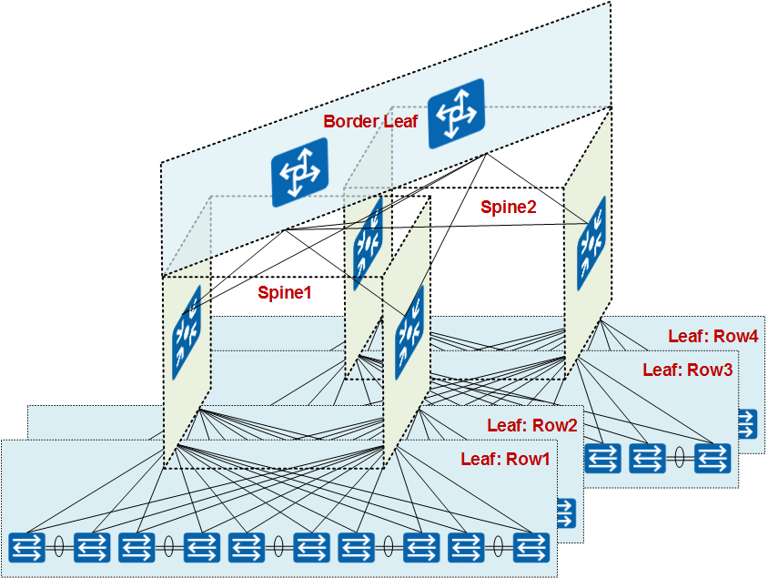
{kind=link}
如果我们按照4个40GE的出口接口来计算，我们将有160G的带宽，此时收敛比是5：1（800G÷160G=5）。但是根据目前统计，约75%的流量都是发生在数据中心的内部，即东西向的流量。那么剩下的25%的流量，即南北向的流量大概只有200G（800G×25%=200G）。如果按照这个来估算，我们的收敛比为1.25:1（200G÷160G=1.25），属于可接受的范围。
由于Border Leaf的设备不需要很多接口，我们选用上面提到的 CE6870-24S6CQ-EI 作为Border Leaf设备就可以了。
最终我们得到网络收敛设计的逻辑图，如[图4-16]所示。
图4-16 收敛比设计逻辑示意图
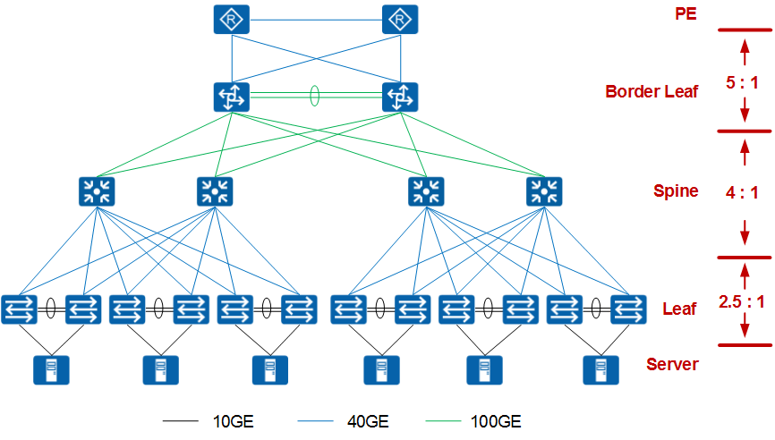
{kind=link}
3. 本章小结¶
在设计数据中心网络收敛比时，我们需要根据网络业务和流量模型。综合考虑东西、南北流量的大小、比例，来制定合适的收敛比和选择相应的设备。根据经验值，可参考以下设计：
- 在服务器接入的Leaf层，南北向收敛比一般控制在3：1以下；
- 在Spine层，考虑和Leaf层的收敛比接近或更小；
- 在Border Leaf层，收敛比一般较大，根据客户的出口路由带宽灵活设计。
当采用二层的结构时，Spine层除了南北向流量，东西向流量的压力也会更大，需要选用高性能的交换机，并尽量增加Spine间互联的带宽。
华为CloudEngine系列交换机，具有线速转发，高端口密度和大缓存等特点，是您构建低收敛比高性能网络的最佳伙伴。了解华为CloudEngine系列交换机更多转发性能和接口信息，请访问：http://e.huawei.com/cn/products/enterprise-networking/switches/data-center-switches。